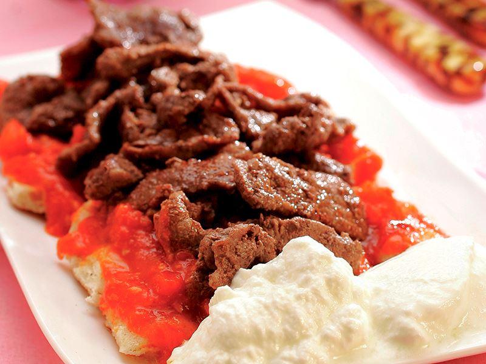
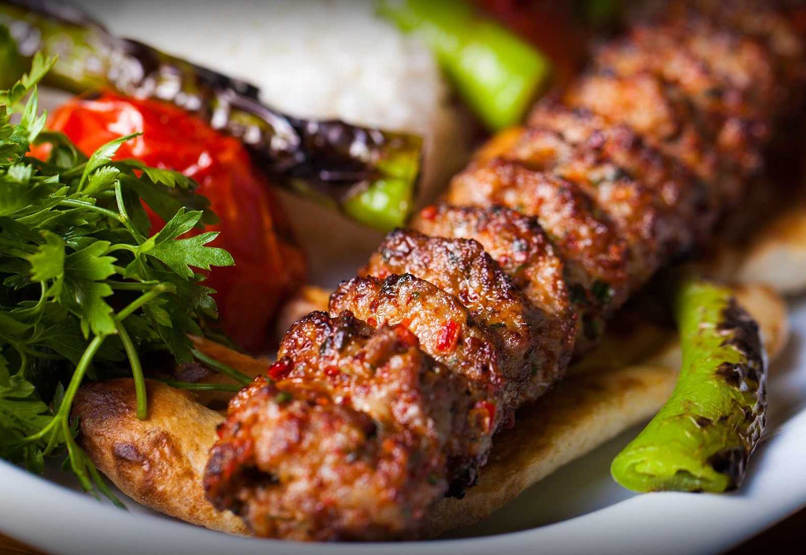
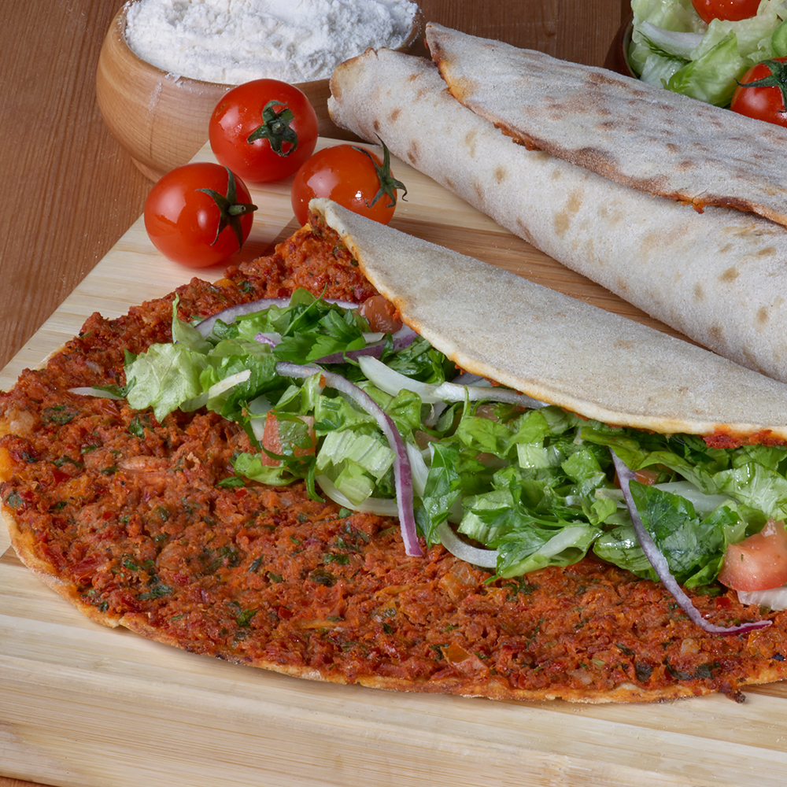
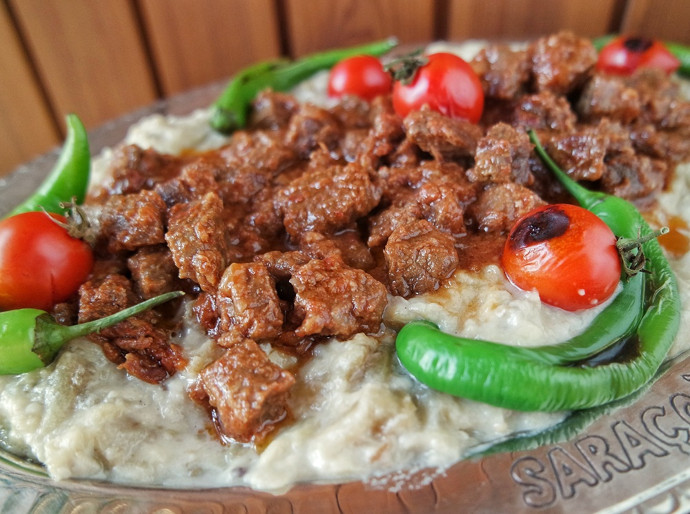
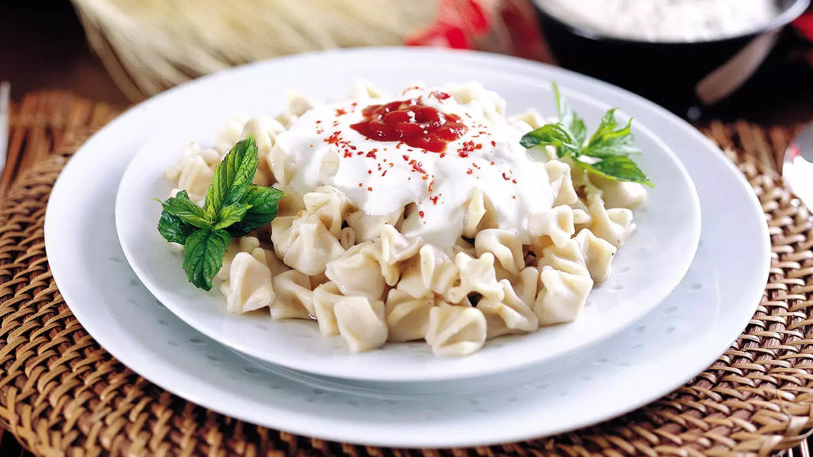

ISKENDER
Iskender Kebap is one of the most well-known dishes of northwestern Turkey. It takes its name from its inventor, Iskender Efendi, who lived in Bursa in the late 19th century Ottoman Empire.
The dish consists of döner kebab prepared from thinly cut grilled lamb topped with hot tomato sauce over pieces of pita bread and generously slathered with melted sheep butter and yogurt. Tomato sauce and melted butter are generally poured over the dish, at the table.
ADANA KEBAP
Kebab refers to a great variety of meat-based dishes in Turkish cuisine. Adana kebab is a kind of kebab in the Turkish cuisine, made from a piece of meat cut from the hand with a knife similar to the line, called "armor", unique to Adana.
The most distinctive feature that distinguishes Adana kebab from other kebabs is the meat used. The meat should be obtained from male sheep. The ingredients used in preparing the mixture are red pepper flakes and tail oil. Adana Kebab should be served with complementary greens, sumac onion salad and salad.
It is only made with lamb meat, lamb tail oil, chili peppers and salt. No other spices are added.
LAHMACUN
Lahmacun is a round, thin piece of dough topped with minced meat (most commonly beef or lamb), minced vegetables and herbs including onions, tomatoes and parsley, and spices such as cayenne pepper, paprika, cumin and cinnamon, then baked. It is sometimes described as Turkish pizza. Though it somewhat resembles pizza, it has only in modern times been called by that name, and it is of Middle Eastern rather than European origin. Furthermore, unlike pizza, lahmacun traditionally does not contain cheese.
HUNKAR BEGENDI
Hunkar Begendi, or simply begendi (the name means that the sovereign/sultan liked it), is an Ottoman cuisine dish. It is made from smoked and spiced eggplant, which is grilled, then pureed, and stirred with milk, melted butter and roasted flour. Finally, the mixture is topped with cubes of sauteed lamb.
MANTI
Turkish pasta that consists of folded triangles of dough filled with minced meat, often with minced onions and parsley. It is typically served hot topped with garlic yogurt and melted butter or warmed olive oil, and a range of spices such as oregano, dried mint, ground sumac, and red pepper powder. The combination of meat-filled dough with yogurt differentiates it from other dumplings such as tortellini, ravioli, and Chinese wonton. Mantı is usually eaten as a main dish. Minced chicken and quail meats are also used to prepare mantı in some regions of Turkey.